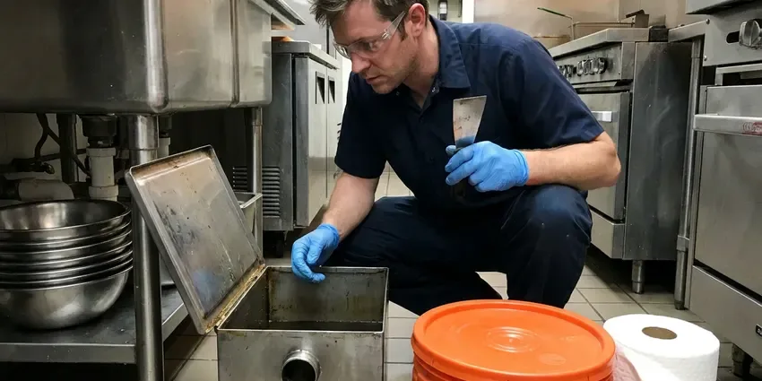

Grease Trap Installation in Alabaster, AL
BRV Plumbing offers professional grease trap installation services across Alabaster, AL, ensuring your kitchen operates smoothly and meets all local health codes.
- Fast, Dependable Service
- Code Compliant Installations
- Experienced Local Plumbers
- Free Estimates Available

Need a New Grease Trap Installed in Alabaster, AL?
Our team is ready to provide a quick and accurate quote for your installation project.
Professional Grease Trap Installation in Alabaster, AL
When it comes to grease trap installation, BRV Plumbing provides complete services throughout Alabaster, AL. Our certified plumbers ensure that your new system is sized correctly, installed to meet all local regulations, and functions efficiently from day one.
Our expertise includes:
- Commercial kitchen grease trap sizing and installation.
- Residential grease interceptor setup for high-volume use.
- Compliance with Alabama plumbing and environmental codes.

Additional Kitchen Plumbing Services in Alabaster, AL
Our kitchen plumbing services in Alabaster, AL cover sinks, disposals, dishwashers, and grease traps so your kitchen keeps running without backups or leaks.




Alabaster grease trap cleaning specialists

Customers
Why Choose BRV Plumbing for Grease Trap Installation in Alabaster, AL?
A correctly installed grease trap prevents major issues like sewage backups and FOG (Fats, Oils, and Grease) accumulation in sewer lines. We use appropriate tools and techniques to ensure a durable and effective installation.
- Code Compliance, We ensure every grease trap installation adheres strictly to all local Alabaster and Alabama plumbing codes and environmental regulations.
- Prevent Clogs, A well-installed grease trap prevents fats, oils, and grease from entering and clogging your main sewer lines, saving you from costly emergencies.
- System Efficiency, Proper sizing and installation mean your grease trap will effectively filter waste, extending the life of your plumbing system.
Citywide Coverage
BRV Plumbing proudly serves every neighborhood and business district of Alabaster for grease trap installation. From downtown eateries to suburban restaurants, our plumbers are familiar with the unique needs and permit processes across the area.
Experienced Team
Our plumbing team has extensive hands-on experience with grease trap installations, having worked on countless commercial and some high-volume residential kitchens. We know the ins and outs of various models and the best practices for secure, long-lasting setup.
Safety-First Approach
We take every precaution during the installation process to protect your property and our team. Our plumbers are meticulous in following all safety protocols and ensuring your new grease trap installation meets or exceeds all Alabama plumbing codes.
Trusted Certified Alabaster Plumbing Services Professionals
At BRV Plumbing, we take pride in providing licensed, certified plumbing services throughout Alabaster, AL. Backed by leading industry credentials, our experienced plumbers combine technical skill with genuine customer care. Whether it is repair, installation, or maintenance, we follow strict safety and quality standards to deliver long-lasting results you can trust.
Call Us Now PHCC Plumbing Contractor Recognition
PHCC Plumbing Contractor Recognition Better Business Bureau (BBB) Accreditation
Better Business Bureau (BBB) Accreditation Angi Certified Pro
Angi Certified Pro ISO 9001 Quality Management Certification
ISO 9001 Quality Management CertificationReliable Grease Trap Installation Services in Alabaster, AL
Commercial Grease Trap Installation in Alabaster
BRV Plumbing specializes in installing grease traps for a wide range of commercial establishments, including restaurants, cafeterias, and food processing facilities. We handle everything from small under-sink units to large outdoor interceptors, ensuring your business meets health department standards and prevents costly sewer backups. Our team considers your kitchen's specific flow rate and waste volume to recommend and install the most appropriate system.

Residential Grease Interceptor Setup in Alabaster, AL
While less common, some large residential kitchens or homes with extensive outdoor cooking setups may benefit from a small grease interceptor. These are typically installed under the sink and help prevent fats, oils, and grease from clogging household drains. BRV Plumbing can assess your home's needs and provide a suitable residential grease trap installation solution that protects your plumbing system from FOG accumulation.
Hydro-Mechanical Grease Interceptor Installation in Alabaster
Hydro-mechanical grease interceptors, often called HGI units, are compact and designed for indoor use, typically under a sink or on the floor. These units use baffles to slow down wastewater flow, allowing grease to separate and accumulate. BRV Plumbing expertly installs various sizes of HGI units, ensuring proper venting, leveling, and connection to your drainage system in Alabaster for maximum efficiency.
Gravity Grease Interceptor Installation in Alabaster, AL
Gravity grease interceptors, or GGI units, are larger, typically located outdoors, and rely on the natural difference in specific gravity between FOG and water. These are common for high-volume commercial kitchens. Our team handles the complex excavation, concrete work, and plumbing connections required for proper GGI installation, ensuring compliance with all local Alabama ordinances for waste management.
Zurn Grease Trap Installation in Alabaster
Zurn is a well-known brand for reliable plumbing fixtures, including grease interceptors. BRV Plumbing is experienced in installing various Zurn grease trap models, from compact under-sink units to larger capacity models for busy kitchens. We ensure each Zurn product is installed according to manufacturer specifications and local codes, providing a durable and effective solution for your FOG management in Alabaster.
Grease Trap Sizing and Placement in Alabaster, AL
Correct sizing and strategic placement are critical for a grease trap's effectiveness. Installing a unit that is too small will lead to frequent clogs and overflow, while an oversized one can be an unnecessary expense. Our plumbers meticulously calculate the required capacity based on your kitchen's water flow, fixture count, and operating hours, ensuring optimal performance for your Alabaster, AL business.
Grease Trap Replacement and Upgrades in Alabaster
If your existing grease trap is old, damaged, or no longer meets current code requirements, BRV Plumbing offers professional replacement and upgrade services. We can remove your outdated unit and install a new, more efficient model that complies with all regulations in Alabaster. Upgrading can prevent future plumbing issues and help your business avoid fines related to FOG discharge.

Emergency Grease Trap Services in Alabaster, AL
While installation is planned, sometimes an emergency situation like a burst pipe or severe blockage may necessitate immediate grease trap attention. If your current system fails critically and requires urgent replacement to resume operations, BRV Plumbing offers emergency services in Alabaster, AL. We prioritize rapid response to minimize downtime for your business and get your kitchen back on track.
Grease Trap Installation Near Me in Alabaster, AL
When you search for 'grease trap installation near me' in Alabaster, AL, BRV Plumbing is your trusted local expert. Our team is strategically located to provide prompt and efficient service throughout the metropolitan area and surrounding communities. We understand the specific plumbing needs of businesses and homes in this region.
Don't let FOG cause a major headache for your commercial kitchen. For reliable grease trap installation near me, call BRV Plumbing today. We offer transparent pricing, professional service, and a commitment to helping Alabaster businesses maintain compliant and functional plumbing systems.
BRV Plumbing at a Glance
- Licensed and insured plumbers serving Alabaster, AL
- 24/7 emergency service with same-day scheduling
- Clear written estimates, no hidden fees
- 4.8-star rated by 549+ Alabama customers
Alabaster Map
Alabaster Information
- Population
- 34,107
- Area codes
- Local
- Service area
- Alabaster and communities within 40 miles
- Nearby
- Hoover, Vestavia Hills, Birmingham, Tuscaloosa
For homes and businesses in Alabaster, AL, where hot and humid conditions can exacerbate FOG accumulation in drains, a properly installed grease trap is crucial for preventing costly plumbing blockages and maintaining a healthy environment.
Expert Services
Trust our professionals for reliable BRV Plumbing solutions in Alabaster, AL.
Our Specialized Plumbing Services in Alabaster, AL
At BRV Plumbing, we provide a complete range of plumbing services across Alabaster, AL. From leak detection to full system installations, our team ensures fast, precise, and affordable service for both residential and commercial properties. Explore our core services below:


How Our Grease Trap Installation Process Works in Alabaster, AL
BRV Plumbing follows a clear, step-by-step process to ensure every grease trap installation in Alabaster, AL is done correctly and to code.
Request a Quote
Contact us at (256) 391-9413 to discuss your grease trap installation needs. We will gather information about your commercial kitchen or property and schedule an on-site assessment.
Site Assessment
Our expert plumbers will visit your Alabaster location to evaluate the space, determine the optimal grease trap size, and identify the best placement. We consider factors like kitchen layout, water usage, and local code requirements.
Permit Acquisition
For commercial grease trap installations in Alabaster, permits are often required. We assist you in navigating the necessary paperwork and ensure all local permits are secured before commencing work.
Frequently Asked Questions About Grease Trap Installation in Alabaster
The cost of grease trap installation in Alabaster, AL varies widely based on the type and size of the trap, whether it's an indoor or outdoor unit, and the complexity of the installation. For a small under-sink hydro-mechanical unit, expect to pay between $1,500 and $4,000. Larger outdoor gravity interceptors can range from $7,000 to $20,000 or more, including excavation and concrete work.
Signs you might need a new grease trap include frequent sewer backups, persistent foul odors coming from drains, slow drainage throughout your kitchen, or if your current unit is visibly corroded or leaking. If your existing trap is old and no longer meets current local codes in Alabaster, an upgrade is also advisable.
Determining the correct grease trap size involves calculating your kitchen's wastewater flow rate, fixture count, and peak operating hours. Our experienced plumbers will conduct a thorough assessment of your Alabaster business to recommend the appropriate size and type of grease trap that meets local codes and your operational needs.
Yes, for most commercial grease trap installations in Alabaster, a plumbing permit from the local building department is required. This ensures the installation complies with local codes and environmental regulations. Our team can help guide you through the permitting process.
Grease trap installation, especially for commercial applications, is a complex process that requires specialized knowledge of plumbing codes, proper sizing, and connection techniques. Attempting a DIY installation can lead to code violations, inefficient operation, and costly plumbing issues down the line. It is always recommended to hire a licensed professional.
While the terms are often used interchangeably, 'grease trap' typically refers to smaller, indoor hydro-mechanical units, often found under sinks. 'Grease interceptor' usually refers to larger, outdoor gravity-fed units with higher capacities. Both serve the same purpose of separating FOG from wastewater.
The lifespan of a grease trap depends on its type, material, and how well it's maintained. Steel grease traps may last 10-15 years, while durable fiberglass or polyethylene units can last 20-30 years or even longer. Regular cleaning and proper usage are key to extending its lifespan.
BRV Plumbing provides a warranty on our workmanship for all grease trap installations. Additionally, the grease trap unit itself will typically come with a manufacturer's warranty. We will provide you with all warranty details at the time of installation, ensuring your peace of mind.
What People Are Saying About Our Plumbing Experts?

Mark T.
When our office needed drain cleaning, BRV Plumbing provided quick, reliable service. The plumber arrived on time and made sure every drain flowed perfectly before leaving. Very satisfied.
Drain Cleaning · Northport, AL
Robert G.
The trenchless sewer replacement saved our front yard. They walked us through the camera inspection footage first so we knew exactly what we were paying for.
Sewer Line Replacement · Birmingham, ALJames P.
Our commercial plumbing system had a leak under the sink, and BRV Plumbing handled it professionally. The plumbers arrived quickly and restored everything without disruption to our customers.
Commercial Plumbing · Alabaster, AL
Sofia M.
Two new toilets installed in one visit, no mess left behind, and the tech even adjusted a faucet he noticed was dripping. Fair pricing and really friendly.
Toilet Installation · Birmingham, AL
Daniel K.
A pipe burst at 11 pm and they actually answered. The plumber showed up within the hour, shut everything down, and had us back to normal the next morning. Could not ask for more.
Emergency Plumbing · Tuscaloosa, AL
Emily R.
I called BRV Plumbing for plumbing repair, and the technician was fast, polite, and thorough. They explained the problem clearly and fixed it the same day. I will definitely hire them again. Highly recommended!
Plumbing Repair · Vestavia Hills, AL